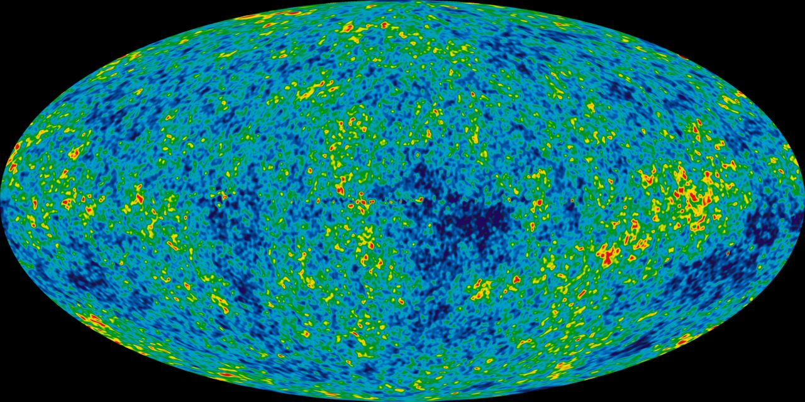
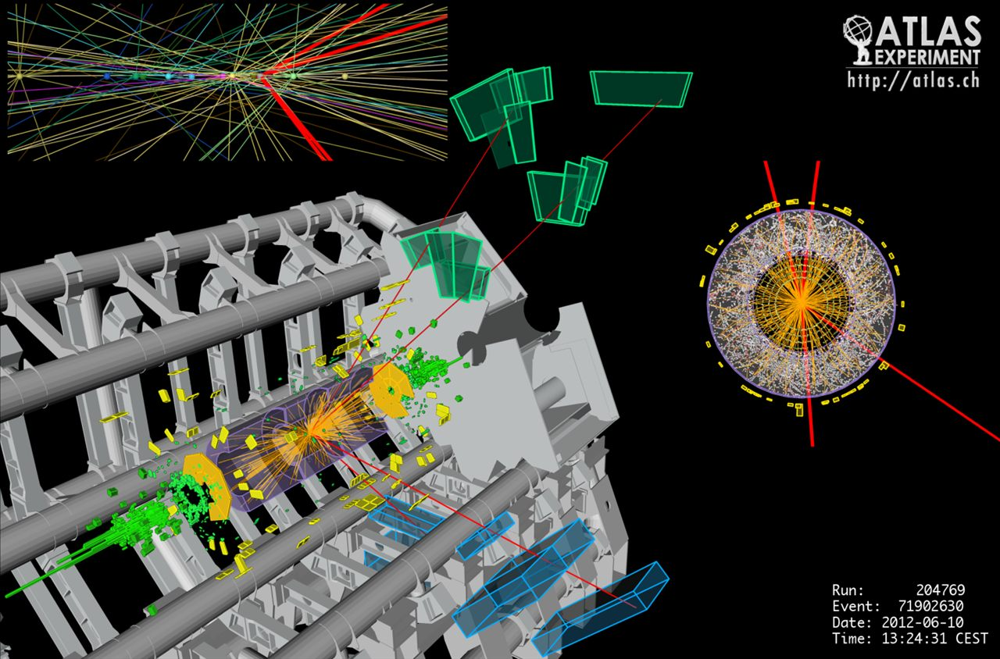
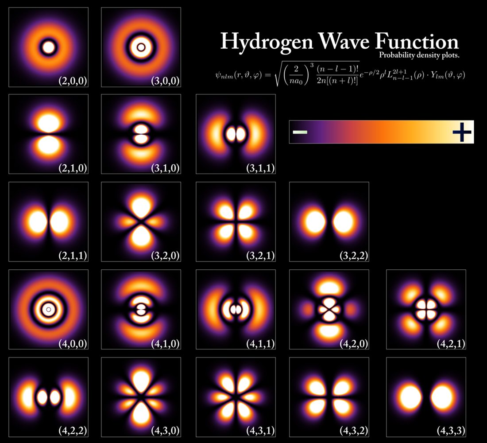
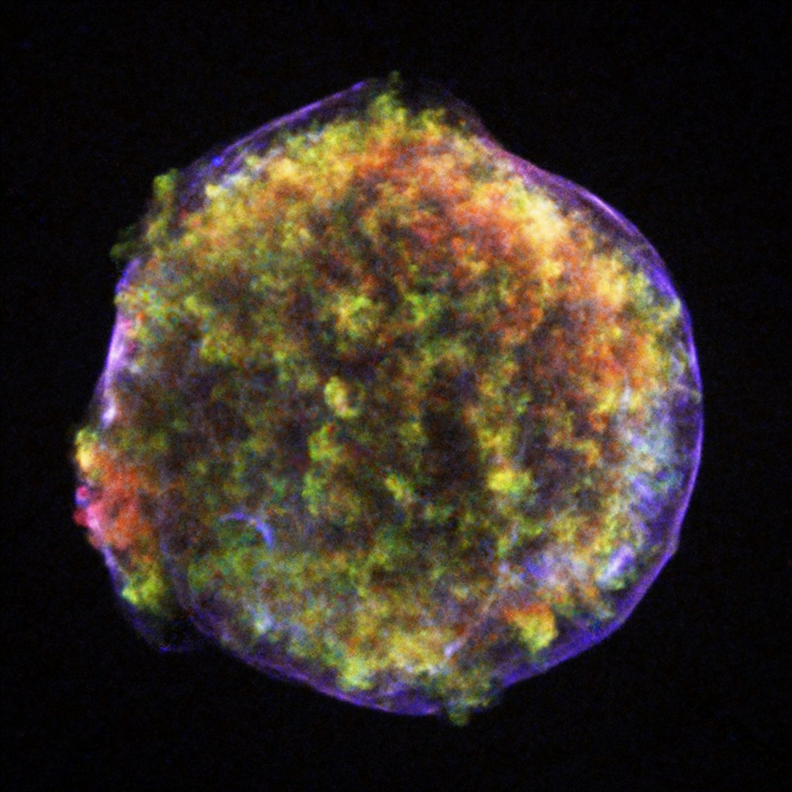

Follow the universe as expansion cools energy into particles, particles bind into nuclei and atoms, and stars forge the elements that make planets and life possible.
Physics often cannot offer a literal photograph. This site names the evidence level beside each important visual, and explains false color, compressed time, changed scale, and model assumptions.
The cosmic journey follows what happened in nature. The field atlas follows how people learned to describe it—from mechanics and fluids to electromagnetism, relativity, quantum theory, condensed matter, and living systems.
Teaching schematic: line crossings indicate conceptual inheritance, not literal historical routes.
Each chapter begins with what existed, shows what changed, and points to the evidence and interactive model that let us test the idea.
The Big Bang was not matter exploding into empty space. It describes an early hot, dense state and the expansion of space itself. Cooling changes which particles and nuclei can exist; after recombination, photons travel freely and become the cosmic microwave background.
We observe expansion, primordial light-element abundances, and the CMB. Earlier epochs are reconstructed by testing physical models against those measurements; inflation and quantum gravity remain less certain.

As temperatures fall, quarks, leptons, gauge bosons, and the Higgs field define what interactions are possible. Particle accelerators briefly recreate high-energy conditions and detectors infer short-lived particles from tracks, showers, and missing momentum.
No. Electronics record spatially distributed signals. Reconstruction software combines them with magnetic-field and detector models to estimate particle identity, momentum, and decay history.

Up and down quarks bind into baryons. Later, some protons and neutrons fuse into hydrogen, helium, and traces of lithium. The exact grouping matters: the same twelve light quarks can form a stable helium-4 nucleus or short-lived Delta baryons.
The builder is a constrained bookkeeping model, not a hadronization simulation. It lists valid quark groupings, defaults to ordinary nucleons, and marks Delta alternatives as unstable.
The Bohr picture is useful shell bookkeeping, but electrons do not orbit like planets. Quantum mechanics predicts probability amplitudes and electron density. Orbital surfaces show chosen probability boundaries and phase, not a sharp physical skin.
The displayed cloud is calculated from a wavefunction. Experiments test its consequences and can reconstruct charge density, but there is no ordinary camera image of a tiny ball smeared around a nucleus.

Fusion builds many nuclei up to the iron region. Slow neutron capture in evolved stars, explosive burning, Type Ia supernovae, core-collapse supernovae, and neutron-star mergers contribute different heavy elements. Their relative shares remain an active research topic.
No. Different nuclear pathways dominate in different sites. The periodic table's origin overlay summarizes current evidence and calls out model-dependent r-process contributions.

Supernova shocks accelerate particles, neutron stars create intense magnetic environments, and colliders isolate interactions under controlled conditions. These events connect cosmic evolution back to the particle rules introduced near the beginning.
Use the detector lab to identify signatures, the decay sandbox to sample measured branching ratios, and the reaction animations to compare gas, light, heat, and precipitate outcomes without mistaking them for molecular-dynamics simulations.